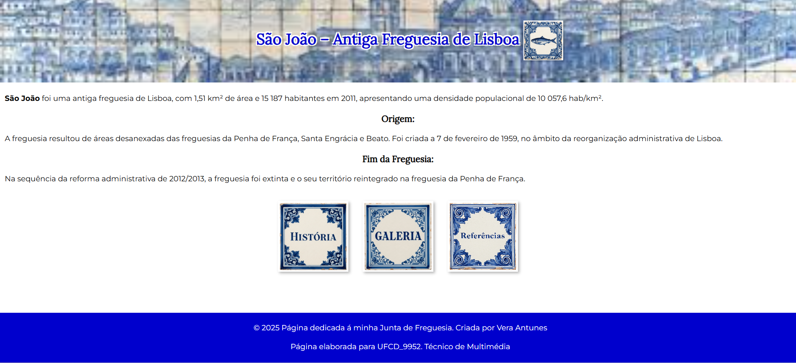

Vera Antunes

Alentejo, Portugal

Pedido de informação

Sexo: Feminino | Data de Nascimento: 07/05/1980 | Nacionalidade: Portuguesa
Alentejo, Portugal
Pedido de informação
Sexo: Feminino | Data de Nascimento: 07/05/1980 | Nacionalidade: Portuguesa
Formações Modulares Certificadas - IEFP
Designer de Joalharia de Autor & Artista Independente
Percurso em Joalharia Técnica e Consultoria
Técnica de Multimédia
Operador/a informática
Programador/a de Informática
Escola Artística António Arroio
Diploma 9º Ano

Materna: Português | Inglês: A2
Clique no título para ver o meu Portfólio de Projetos práticos em Multimédia, C++ e Redes.

Criação de elementos visuais e prototipagem de interfaces (Auto-Hunting Pass) para a comunidade global de gaming.

Desenvolvimento completo de interface web para uma autarquia local, aplicando competências de edição web e design.
Carta de Condução: Categoria B